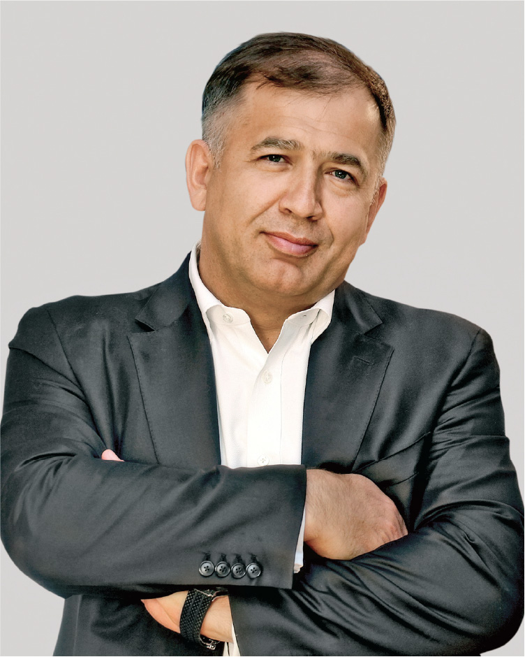

Годовой отчет 2022


Президент ПАО «Селигдар»
Константин Александрович
БЕЙРИТ
Константин Александрович
БЕЙРИТ
В 2022 году ПАО «Селигдар» удалось выполнить основные поставленные цели в рамках текущей стратегии развития и добиться приемлемых результатов. Несмотря на экономические сдвиги и ограничения, нами установлен новый рекорд по производству золота – более 7,5 т, на 6% больше уровня 2021 года.